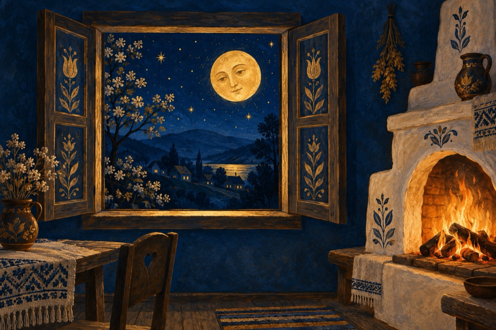

De câte ori
De câte ori deschid fereastra
Nu-i mai găsesc inimii loc
Grijind să fie caldă vatra
Punând mereu lemne pe foc
De câte ori deschid fereastra
Aminte îmi aduc de tine
Așa cum și de data asta,
Te-aștept cu drag să vii la mine.
Refren:
Iubito mă cuprind fiori,
De-atâtea ori, de-atâtea ori
Și-aș vrea și cerul să-l sărut
Da, te iubesc atât de mult!
De câte ori deschid fereastra
Nu-i mai găsesc inimii loc
Și ard încins precum e vatra
Simțind că sufletu-mi ia foc!
Refren:
Iubito mă cuprind fiori,
De-atâtea ori, de-atâtea ori
Și-aș vrea și cerul să-l sărut
Da, te iubesc atât de mult!
De câte ori, de câte ori
Acum eu ușa îți deschid
Ai trandafiri în obrăjori
Ca pe-o comoară te cuprind
De-atâtea ori, de-atâtea ori!
Refren:
Iubito mă cuprind fiori,
De-atâtea ori, de-atâtea ori
Și-aș vrea și cerul să-l sărut
Da, te iubesc atât de mult!
Da, te iubesc atât de mult
Și sfatul cerului l-ascult
Mi-ai dăruit primul sărut
Iubito, te iubesc atât de mult!
Refren:
Iubito mă cuprind fiori,
De-atâtea ori, de-atâtea ori
Și-aș vrea și cerul să-l sărut
Da, te iubesc atât de mult!
Vasile Groza